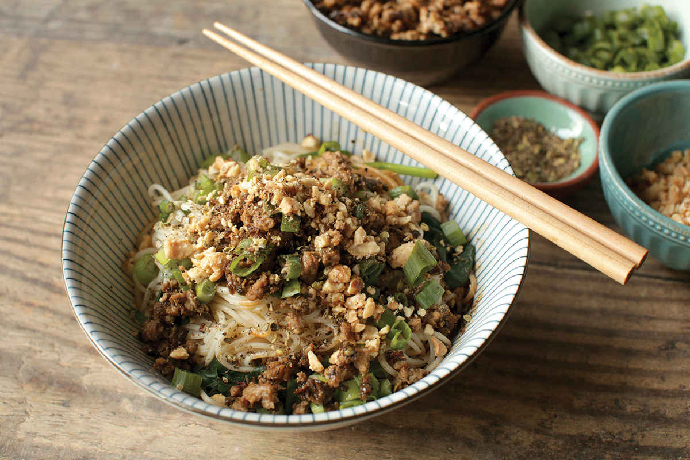
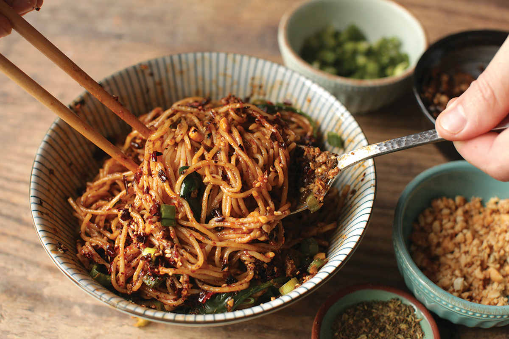

DAN DAN NOODLES
|
Yield Serves 4 |
Active Time 15 minutes Total Time 15 minutes |
For the best results, use homemade Sichuan Málà Chile Oil (here). If you can’t find ya cai (preserved mustard greens), you can use zha cai (preserved mustard root) in its place or a combination of equal parts finely chopped sauerkraut and drained capers (really!). If you prefer a soupier version, you can add a ladle of the noodle-cooking liquid to the bowl before adding the drained noodles or a ladle of hot broth.
INGREDIENTS
2 teaspoons (4 to 5 g) red Sichuan peppercorns
For the Sauce:
2 tablespoons (30 ml) Chinese sesame paste, store-bought or homemade (here), or 4 teaspoons (20 ml) tahini or unsweetened peanut butter mixed with 2 teaspoons (10 ml) roasted sesame oil
2 tablespoons (30 ml) warm water
2 tablespoons (30 ml) light soy sauce or shoyu
2 tablespoons (30 ml) Chinkiang or balsamic vinegar
2 teaspoons (8 g) sugar
½ cup (120 ml) homemade or store-bought Sichuan chile oil with its sediment (see Notes)
2 teaspoons (5 g) minced fresh garlic (about 2 medium cloves)
For the Pork:
1 tablespoon (15 ml) peanut, rice bran, or other neutral oil
6 ounces (180 g) ground or finely chopped pork (preferably with plenty of fat)
2 ounces (about ¼ cup) minced preserved mustard root or stem (ya cai or zha cai; see Notes)
1 tablespoon (15 ml) Shaoxing wine
1 tablespoon (15 ml) light soy sauce or shoyu
To Serve:
Kosher salt
1 pound (450 g) fresh wheat noodles
4 ounces (120 g) greens, such as spinach or baby bok choy (optional)
2 ounces (60 g) mung bean sprouts (optional)
¼ cup (40 g) roasted peanuts or Fried Peanuts (here), gently crushed in a mortar and pestle
4 to 5 scallions, thinly sliced
DIRECTIONS
1 Toast the Sichuan peppercorns in a dry wok over high heat until fragrant, about 1 minute. Transfer to a mortar and pestle or spice grinder and grind into a fine powder. Set aside.
2 For the Sauce: Combine the sesame paste and water in a medium bowl and stir until completely smooth. Add the soy sauce, vinegar, sugar, chile oil, garlic, and half of the ground Sichuan peppercorns and stir until homogenous and the sugar is dissolved. Divide the sauce evenly among 4 individual bowls or pour it into one large serving bowl to share.
3 For the Pork: Heat a wok over high heat until lightly smoking. Add 1 tablespoon (15 ml) of the oil and swirl to coat. Add the pork and cook, stirring and tossing and using a spatula to break up the pork until it is no longer pink, about 1 minute. Add the preserved mustard root and cook, stirring and tossing until all excess moisture has evaporated and the mixture starts to stick to the wok, about 1 minute longer. Add a big pinch of the ground Sichuan peppercorns and toss to combine. Swirl in the wine and soy sauce around the edges of the wok and continue to cook, stirring and tossing, until the wine and soy sauce have completely evaporated. Transfer the pork mixture to a small bowl.



4 To Serve: Bring 3 quarts of lightly salted water to a boil in the wok or in a large pot over high heat. When the water is boiling, add the noodles, greens, and bean sprouts (if using) and cook according to the noodle package directions until barely cooked through, just a couple minutes.
5 Drain the noodles, reserving some of the cooking liquid, and divide evenly among the individual bowls or transfer them to the serving bowl. Add a few tablespoons of the cooking liquid to each bowl. Spoon the pork mixture on top. Sprinkle with the remaining ground Sichuan peppercorns and the sliced scallions. Serve immediately.